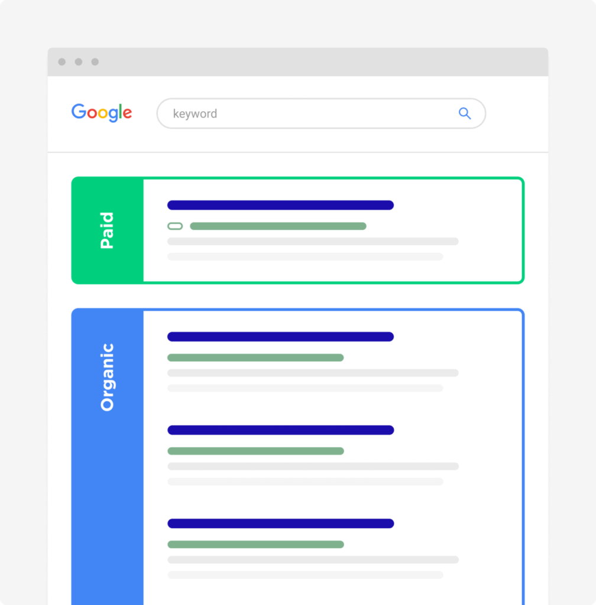
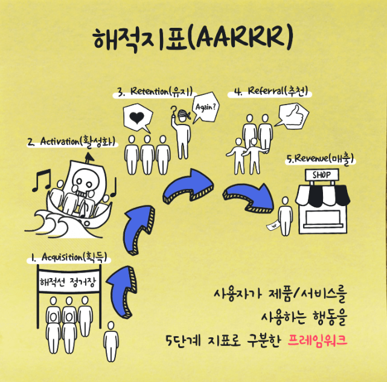

마케팅 용어집
SEO (Search Engine Optimization)
검색 결과 상단에 자연스럽게 노출시키는 방법

뜻
광고비 없이 검색 결과에서 웹페이지 노출과 순위를 높이는 작업
설명
사람들이 직접 검색하는 키워드에 맞춰
콘텐츠 구조·제목·본문을 최적화해 자연 유입을 늘린다.
왜 중요한가
한 번 잘 만들어두면 광고비 없이도
지속적인 유입과 전환을 만들 수 있다.
AARRR (해적 지표)
고객 행동을 5단계로 보는 성장 지표

뜻
사용자가 서비스에 들어와서
경험하고 → 다시 오고 → 추천하고 → 돈을 쓰는 과정을
5단계로 나눠 관리하는 프레임워크
설명
Acquisition(유입)
Activation(첫 경험)
Retention(유지)
Revenue(수익)
Referral(추천)
왜 중요한가
문제가 어디서 새는지 바로 보여줘
무엇부터 고쳐야 할지 판단하기 쉽다.
노출 (Impression)
광고가 보여진 횟수
뜻
광고나 콘텐츠가 사용자 화면에 나타난 총 횟수
설명
같은 사람이 여러 번 봐도
본 횟수만큼 모두 카운트된다.
왜 중요한가
광고가 얼마나 자주 보여졌는지 확인해
인지도 확산 정도를 판단할 수 있다.
도달 (Reach)
광고를 본 사람 수
뜻
광고나 콘텐츠를 한 번이라도 본 사람의 수
설명
한 사람이 여러 번 봐도
도달은 1명으로 계산된다.
왜 중요한가
새로운 사람에게 얼마나 퍼졌는지 알 수 있어
타겟 확장 여부를 판단할 수 있다.
CRM (Customer Relationship Management)
기존 고객을 관리하는 마케팅
뜻
고객 데이터를 기반으로 관계를 유지하고 재구매를 유도하는 전략
설명
구매 이력과 행동 데이터를 활용해
쿠폰·알림·추천 메시지를 개인화한다.
왜 중요한가
신규 유입보다 적은 비용으로
매출과 충성도를 동시에 높일 수 있다.
퍼포먼스 마케팅
성과로 평가하는 마케팅
뜻
클릭, 전환, 매출 등 숫자로 성과를 측정하는 마케팅
설명
성과가 좋은 광고는 확대하고
성과가 나쁜 광고는 빠르게 개선한다.
왜 중요한가
한정된 예산으로
가장 효율적인 결과를 만들 수 있다.